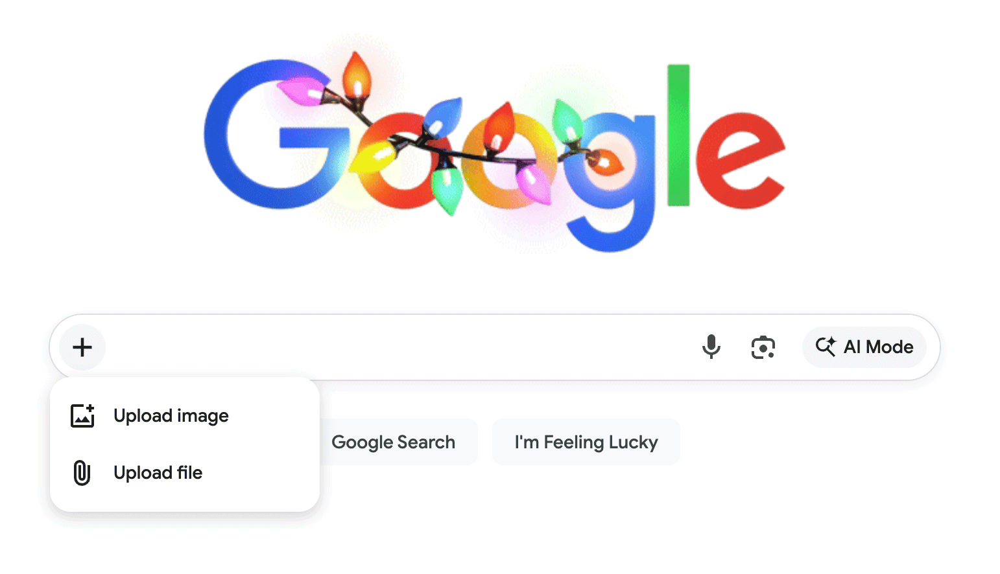

Images spread rapidly online, often without context or verification. A single photo can go viral within minutes, influencing public opinion before its authenticity is confirmed. Reverse image search is one of the most effective techniques used to investigate whether an image is real, reused, or misleading.
Instead of asking “What does this image show?”, reverse image search asks a more critical question: “Where did this image come from?” By tracing the origin and history of an image, users can uncover hidden context, detect manipulation, and verify claims more accurately.
What is Reverse Image Search?
Reverse image search is a method of searching the internet using an image instead of text. Rather than typing keywords, users upload an image or paste its URL into a search engine to find where else the image appears online.
This technique helps identify the original source of an image, discover similar versions, and determine whether the image has been altered or reused in different contexts.
Reverse image search helps reveal the history of an image, not just its appearance.
Why It Is Important
Many viral images are misleading not because they are fake, but because they are taken out of context. Reverse image search allows users to verify whether an image is being used truthfully or deceptively.
- Helps identify the original source of an image
- Detects reused or recycled content
- Reveals if an image was taken from a different event or location
- Supports fact-checking and verification
- Prevents the spread of misinformation
How to Perform Reverse Image Search
1. Uploading an Image to a Search Engine

The most common method is uploading an image directly into a search engine such as Google Images. Once uploaded, the system scans the web to find visually similar images and matching sources.
- Upload an image from your device
- The tool scans for visually similar content
- Results may include identical or edited versions
2. Analyzing Search Results
After performing a reverse image search, the results will show where the image has appeared across the internet. By analyzing these sources, users can identify the earliest known version and evaluate whether the image is being used accurately.
- Check the earliest upload date
- Compare different contexts where the image appears
- Look for credible or original sources
3. Using Cropped or Partial Images
Sometimes, full images may not produce accurate results due to added text or overlays. Cropping the image to focus on key elements can improve search accuracy and help identify the original source more effectively.
- Crop out unnecessary parts of the image
- Focus on the main subject
- Helps bypass misleading edits or overlays
Tools You Can Use
Several tools are available for performing reverse image searches. Each tool has different strengths, so using multiple platforms can provide better results.
- Google Images / Google Lens – widely used and easy to access
- TinEye – specializes in finding exact matches and older versions
- Yandex Images – strong for facial and object recognition
- Bing Visual Search – useful alternative with similar features
Limitations and Challenges
While reverse image search is powerful, it is not perfect. Some images may not appear in search results, especially if they are newly created or heavily edited.
Additionally, different tools may produce different results, making it important to cross-check across multiple platforms.
- New or AI-generated images may not have matches
- Edited images can be harder to trace
- Search results depend on indexed web content
- Requires careful analysis of sources
What We've Learned
Reverse image search is a critical tool for verifying digital media by tracing the origin and history of an image. It allows users to move beyond surface-level interpretation and investigate how and where an image has been used.
By combining reverse image search with critical thinking and other verification techniques, users can better identify misleading content and avoid spreading misinformation in an increasingly digital world.
Always ask: Where did this image come from? The answer may change the entire story.